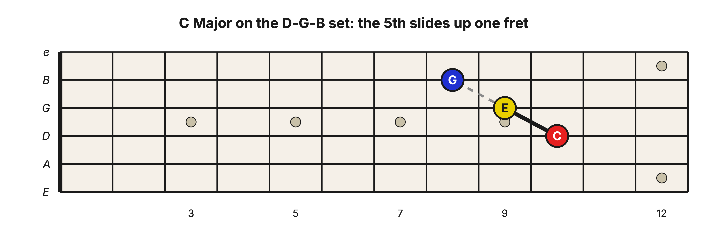
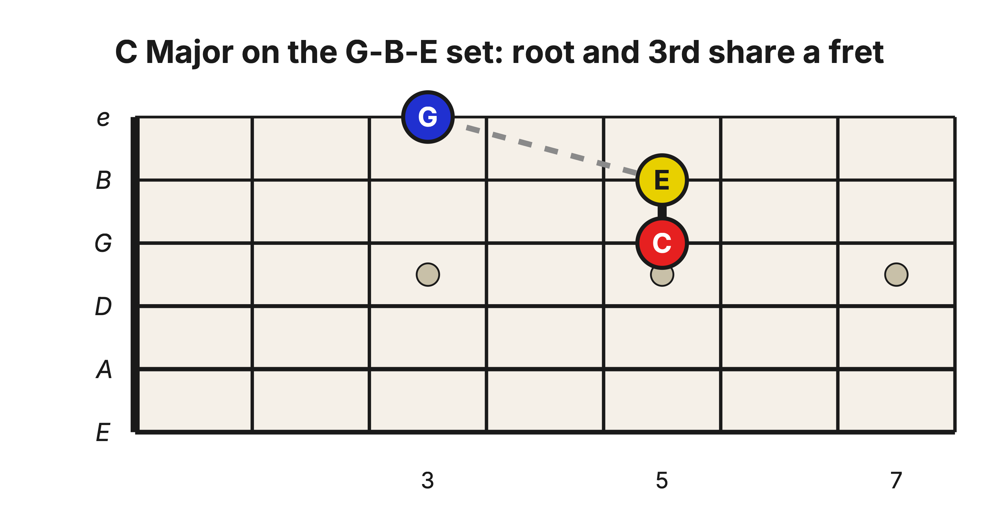
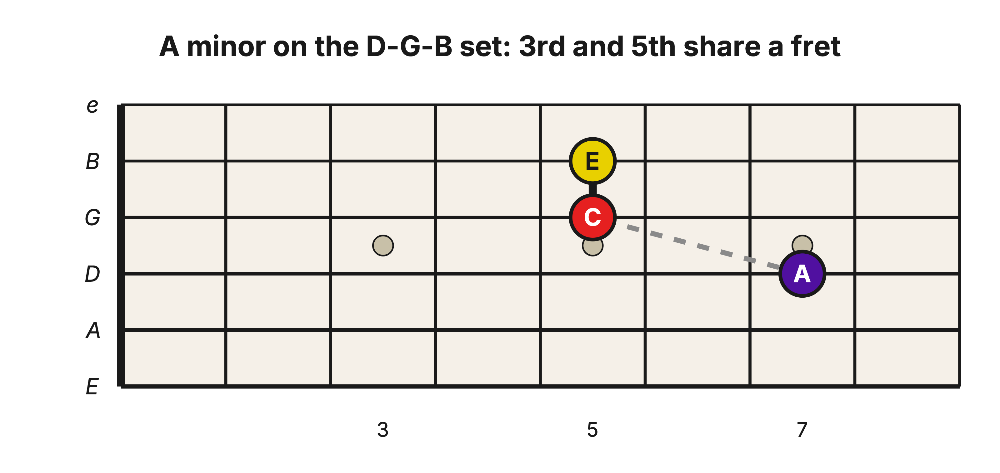
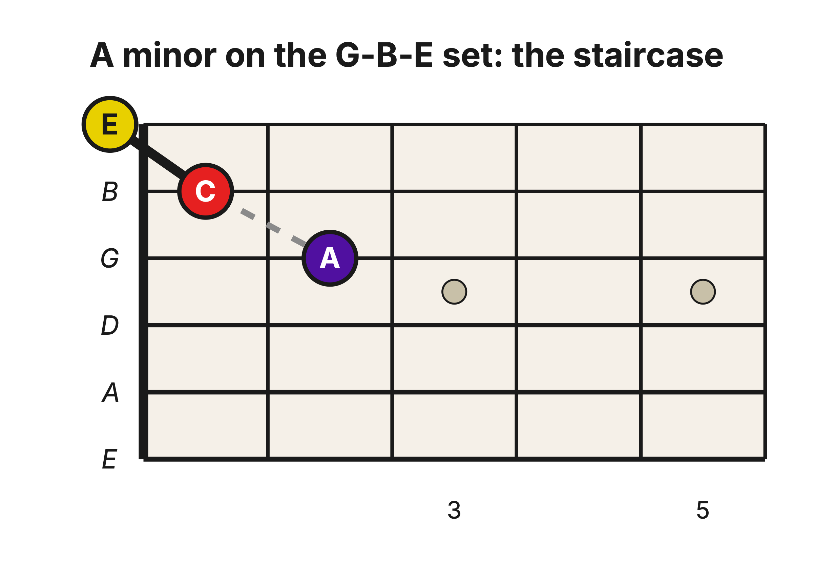
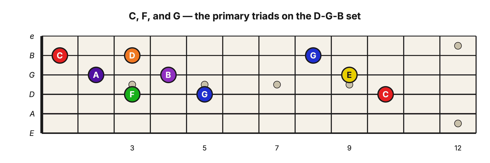

Level 2 · Chapter 14
The Fretboard: Major and Minor Triad Shapes on the D-G-B and G-B-E String Sets
In the last chapter you played Major and minor 3rds on the treble strings, and you saw that the G–B pair plays by its own rules. A triad is just two 3rds stacked, so you are one stack away from full chords up here.
Back in Chapter 8 you turned the triad into a compact shape, one note per string, on the E-A-D and A-D-G string sets. The shape transferred between those two sets without changing, because every neighboring pair in them is tuned a Perfect 4th. The guitar holds two more three-string sets, D-G-B and G-B-E, and each one contains the odd pair. So the shapes up here bend, and they bend by one simple rule: any note that lands on the far side of the G–B pair sits one fret higher than the 4ths pattern predicts. Let’s watch that rule reshape the triad, one set at a time.
The D-G-B set: the 5th slides up
Put the root on the D string. The 3rd sits on the G string, and D up to G is a Perfect 4th, so nothing changes: the 3rd stays one fret behind the root, exactly as it was on the bass sets. The 5th, though, sits on the B string, on the far side of the odd pair. On the bass sets the 5th sat three frets behind the root; here it slides up one, to two frets behind.

Read it from the D string up and it is the same chord it always was: C, a Major 3rd up to E (the solid line), a minor 3rd up to G (the dashed line). The recipe did not change. The picture just got squeezed one fret tighter, because a minor 3rd that crosses from the G string to the B string is the “top note back one” shape from last chapter, not “back two.”
The G-B-E set: the 3rd catches up to the root
Now put the root on the G string. This time the odd pair sits between the root and the 3rd. One fret behind the root, plus the one-fret slide, lands the 3rd on the same fret as the root. You already know this pair of notes: it is the same-fret Major 3rd on the G–B strings, the one built into the guitar’s tuning. That built-in 3rd is the bottom of this triad.
The top of the chord, from the B string up to the high e string, is an ordinary 4ths pair, so the minor 3rd keeps its usual shape there: top note back two frets. Measured from the root, the 5th lands two frets back, just as it did on the D-G-B set.

C and E stand together at the 5th fret, with G two frets behind them on the high e string. The same three notes again, in a third picture of the same chord.
Minor: the 3rd drops one fret, as always
Turning these shapes minor works the way it has worked everywhere else: the recipe flips to a minor 3rd on the bottom and a Major 3rd on top, and on the neck that means the 3rd drops one fret while the root and the 5th stay put.
On the D-G-B set the 3rd was one fret behind the root, so now it is two, level with the 5th. Here is A minor: the root A on the D string at the 7th fret, with C and E standing together two frets behind it. And that same-fret pair on the G and B strings is an old friend: the built-in Major 3rd (C up to E), this time working as the top of a minor chord.

On the G-B-E set the 3rd shared the root’s fret, so now it sits one fret behind, and the shape becomes a little staircase: each note one fret behind the one below it. Here is A minor again, down at the nut, with the open high e string ringing as the 5th.

One picture, two meanings
Here are all four string sets side by side, with each note’s position counted in frets behind the root:
| String set | Major triad | minor triad |
| E-A-D and A-D-G | 3rd one fret back, 5th three back | 3rd two back, 5th three back |
| D-G-B | 3rd one back, 5th two back | 3rd two back, 5th two back |
| G-B-E | 3rd on the root’s fret, 5th two back | 3rd one back, 5th two back |
Two cells in that table match. The Major shape on the D-G-B set and the minor shape on the G-B-E set are the same picture: root, one back, one back again. The staircase you just played as A minor at the nut is the same finger picture as the C Major triad at the 10th fret. Your fingers cannot tell those two chords apart; the string set decides which one you are holding.
So when you place one of these shapes, know which set you are on. On the D-G-B set the staircase is Major; move the identical picture one string set higher and it turns minor. It is the single odd pair doing what it has done all along, one predictable fret at a time.
Now play something
Remember the primary triads, C, F, and G? You played them with their roots on the A string. On the D-G-B set they line up like this: F at the 3rd fret, G at the 5th, and C up at the 10th. You memorized the D string back in Level 1, so you can find every root yourself: find it, then lay the staircase behind it.

Play F, then G, then C, a few strums each. These are the same three chords you have played since the Chords in a Key chapter, in higher, brighter versions that sit under three fingers.
Hear it
- Major to minor: play C Major on the G-B-E set (C and E at the 5th fret, G at the 3rd), then pull the B-string note back one fret and strum again: C minor. The root and the 5th never moved. One note, one fret, and the whole mood turns.
- Same picture, two moods: make the staircase on the D-G-B set starting at the 5th fret of the D string: that is G Major, bright. Now make the identical picture on the G-B-E set starting at the 7th fret of the G string: that is D minor, dark. Same motion, opposite moods; only the strings changed.
Try it yourself
Build the Major shape on the G-B-E set with its root at the 10th fret of the G string. Which Major chord are you playing? Name its three notes, then check below.
Answer key
F Major: F, A, C. The root F is on the G string at the 10th fret, the 3rd (A) stands beside it on the B string at the same fret, and the 5th (C) sits two frets back on the high e string, at the 8th.
Take stock. Four string sets, and a Major and a minor triad shape on every one of them. The ingredients never changed: a root, a 5th, and the one 3rd that picks the mood. The treble strings added a single wrinkle, the one-fret slide across the G–B pair, and now that you have watched it bend each shape in turn, you can build a triad anywhere on the neck and know exactly what you are holding.
Unit 3 checkpoint: find and voice a triad
Use a coin flip, a random-number app, or another person to choose the tasks. The point is recall from a root and a string set, not replaying the examples in order.
- Choose any two of the four triad string sets. From a named root, build one Major and one minor triad on each. Name the root, 3rd, and 5th aloud.
- Explain why the same-looking staircase is Major on D-G-B but minor on G-B-E.
- Find C Major in two different regions of the neck and play both voicings without naming them from the picture first.
- Play the open-position C Major scale once, then locate its root, 3rd, and 5th on a treble-string triad.
Pass rule and spacing
Pass when every triad has the correct three pitch classes, its quality is explained by the 3rd, and you can name the G-B tuning exception without prompting. Re-test the four tasks at the next practice session and after three more sessions. If a shape is correct but unnamed, count that as incomplete: the next unit depends on roots and chord tones, not finger pictures alone.